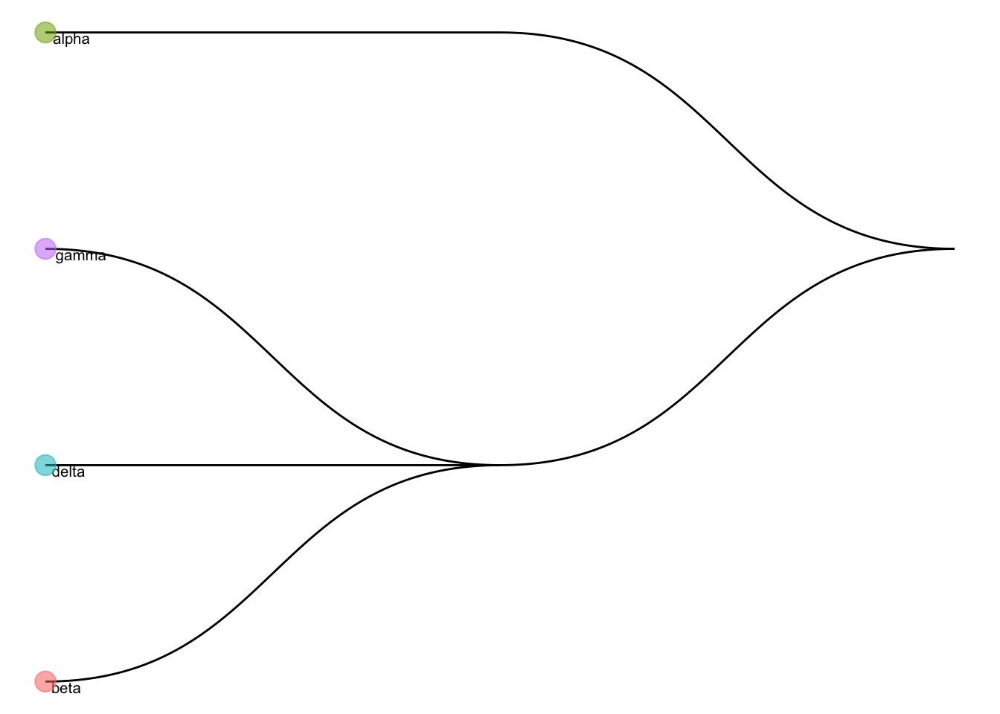

Last updated: 2020-12-16
Checks: 7 0
Knit directory: project-cell-type-annotation/
This reproducible R Markdown analysis was created with workflowr (version 1.6.2). The Checks tab describes the reproducibility checks that were applied when the results were created. The Past versions tab lists the development history.
Great! Since the R Markdown file has been committed to the Git repository, you know the exact version of the code that produced these results.
Great job! The global environment was empty. Objects defined in the global environment can affect the analysis in your R Markdown file in unknown ways. For reproduciblity it’s best to always run the code in an empty environment.
The command set.seed(20201203) was run prior to running the code in the R Markdown file. Setting a seed ensures that any results that rely on randomness, e.g. subsampling or permutations, are reproducible.
Great job! Recording the operating system, R version, and package versions is critical for reproducibility.
Nice! There were no cached chunks for this analysis, so you can be confident that you successfully produced the results during this run.
Great job! Using relative paths to the files within your workflowr project makes it easier to run your code on other machines.
Great! You are using Git for version control. Tracking code development and connecting the code version to the results is critical for reproducibility.
The results in this page were generated with repository version 407d2a9. See the Past versions tab to see a history of the changes made to the R Markdown and HTML files.
Note that you need to be careful to ensure that all relevant files for the analysis have been committed to Git prior to generating the results (you can use wflow_publish or wflow_git_commit). workflowr only checks the R Markdown file, but you know if there are other scripts or data files that it depends on. Below is the status of the Git repository when the results were generated:
Ignored files:
Ignored: .Rhistory
Ignored: .Rproj.user/
Note that any generated files, e.g. HTML, png, CSS, etc., are not included in this status report because it is ok for generated content to have uncommitted changes.
These are the previous versions of the repository in which changes were made to the R Markdown (analysis/felix_first_tries.Rmd) and HTML (docs/felix_first_tries.html) files. If you’ve configured a remote Git repository (see ?wflow_git_remote), click on the hyperlinks in the table below to view the files as they were in that past version.
| File | Version | Author | Date | Message |
|---|---|---|---|---|
| Rmd | 407d2a9 | speckerf | 2020-12-16 | resolve some conflict |
| html | 4c83a03 | speckerf | 2020-12-16 | Build site. |
| Rmd | 43166ea | speckerf | 2020-12-16 | change yaml header |
| html | 06a969e | speckerf | 2020-12-16 | Build site. |
| Rmd | 97c972e | stinea98 | 2020-12-10 | updated readme |
| html | 97c972e | stinea98 | 2020-12-10 | updated readme |
| html | da94380 | speckerf | 2020-12-10 | Build site. |
| Rmd | 7fa5171 | speckerf | 2020-12-10 | first tries with singleR and scCLassify |
#library(devtools)
#devtools::install_github("SydneyBioX/scClassify")
library(scClassify)
suppressPackageStartupMessages(library("celldex"))
suppressPackageStartupMessages(library(SingleCellExperiment))
suppressPackageStartupMessages(library(SingleR))ref <- celldex::HumanPrimaryCellAtlasData(ensembl=TRUE)snapshotDate(): 2020-10-02see ?celldex and browseVignettes('celldex') for documentationloading from cachesee ?celldex and browseVignettes('celldex') for documentationloading from cachesnapshotDate(): 2020-10-27loading from cacherequire("ensembldb")Warning: Unable to map 1470 of 19363 requested IDs.refclass: SummarizedExperiment
dim: 17893 713
metadata(0):
assays(1): logcounts
rownames(17893): ENSG00000121410 ENSG00000268895 ... ENSG00000159840
ENSG00000074755
rowData names(0):
colnames(713): GSM112490 GSM112491 ... GSM92233 GSM92234
colData names(3): label.main label.fine label.onttable(colData(ref)$label.main)
Astrocyte B_cell BM
2 26 7
BM & Prog. Chondrocytes CMP
1 8 2
DC Embryonic_stem_cells Endothelial_cells
88 17 64
Epithelial_cells Erythroblast Fibroblasts
16 8 10
Gametocytes GMP Hepatocytes
5 2 3
HSC_-G-CSF HSC_CD34+ iPS_cells
10 6 42
Keratinocytes Macrophage MEP
25 90 2
Monocyte MSC Myelocyte
60 9 2
Neuroepithelial_cell Neurons Neutrophils
1 16 21
NK_cell Osteoblasts Platelets
5 15 5
Pre-B_cell_CD34- Pro-B_cell_CD34+ Pro-Myelocyte
2 2 2
Smooth_muscle_cells T_cells Tissue_stem_cells
16 68 55 suppressPackageStartupMessages(library(TENxPBMCData))
tenx_pbmc4k <- TENxPBMCData(dataset = "pbmc4k")snapshotDate(): 2020-10-02see ?TENxPBMCData and browseVignettes('TENxPBMCData') for documentationloading from cachetenx_pbmc4kclass: SingleCellExperiment
dim: 33694 4340
metadata(0):
assays(1): counts
rownames(33694): ENSG00000243485 ENSG00000237613 ... ENSG00000277475
ENSG00000268674
rowData names(3): ENSEMBL_ID Symbol_TENx Symbol
colnames: NULL
colData names(11): Sample Barcode ... Individual Date_published
reducedDimNames(0):
altExpNames(0):predictions <- SingleR(test=tenx_pbmc4k, assay.type.test=1,
ref=ref, labels=ref$label.main)
table(predictions$labels)
B_cell CMP DC GMP
606 8 1 2
Monocyte NK_cell Platelets Pre-B_cell_CD34-
1164 217 3 46
T_cells
2293 library(scran)
library(scater)Lade nötiges Paket: ggplot2library(scuttle)
tenx_pbmc4k <- logNormCounts(tenx_pbmc4k)
## only select test cells with labels that appear at least 5 times in the reference dataset
col_index <- colData(ref)$label.main %in% names(which(table(as.factor(colData(ref)$label.main)) > 5))
ref_subset <- ref[,col_index]
colnames(tenx_pbmc4k) <- seq(1,dim(tenx_pbmc4k)[2])
scClassify_test <- scClassify(exprsMat_train = assay(ref_subset, "logcounts"),
cellTypes_train = colData(ref_subset)$label.main,
exprsMat_test = assay(tenx_pbmc4k, "logcounts"),
tree = "HOPACH",
algorithm = "WKNN",
selectFeatures = c("limma"),
similarity = "pearson",
weighted_ensemble = FALSE,
returnList = FALSE,
verbose = TRUE)Ensemble learning is disabled...
after filtering not expressed genes
[1] 17893 677
[1] "Feature Selection..."
[1] "Number of genes selected to construct HOPACH tree 1027"
[1] "Constructing tree ..."
[1] "Training...."
[1] "=== selecting features by: limma ===="
Predicting using followings parameter combinations:
similarity algorithm features
[1,] "pearson" "WKNN" "limma"
================== Start classifying on test dataset ====
Ensemble learning is disabled...
Using parameters:
similarity algorithm features
"pearson" "WKNN" "limma" There are only 0 selected genes in reference data expressed in query dataweights for each base method:
NULLsummary(rownames(tenx_pbmc4k) %in% rownames(ref_subset)) Mode FALSE TRUE
logical 16283 17411 data("scClassify_example")
wang_cellTypes <- scClassify_example$wang_cellTypes
exprsMat_wang_subset <- scClassify_example$exprsMat_wang_subset
exprsMat_wang_subset <- as(exprsMat_wang_subset, "dgCMatrix")
data("trainClassExample_xin")
trainClassExample_xinClass: scClassifyTrainModel
Model name: training
Feature selection methods: limma
Number of cells in the training data: 674
Number of cell types in the training data: 4 scClassify::features(trainClassExample_xin)[1] "limma"plotCellTypeTree(cellTypeTree(trainClassExample_xin))Warning: Removed 3 rows containing missing values (geom_text).
pred_res <- predict_scClassify(exprsMat_test = exprsMat_wang_subset,
trainRes = trainClassExample_xin,
cellTypes_test = wang_cellTypes,
algorithm = "WKNN",
features = c("limma"),
similarity = c("pearson", "spearman"),
prob_threshold = 0.7,
verbose = TRUE)Performing unweighted ensemble learning...
Using parameters:
similarity algorithm features
"pearson" "WKNN" "limma"
[1] "Using dynamic correlation cutoff..."
[1] "Using dynamic correlation cutoff..."
classify_res
correct correctly unassigned intermediate
0.704590818 0.239520958 0.000000000
incorrectly unassigned error assigned misclassified
0.000000000 0.051896208 0.003992016
Using parameters:
similarity algorithm features
"spearman" "WKNN" "limma"
[1] "Using dynamic correlation cutoff..."
[1] "Using dynamic correlation cutoff..."
classify_res
correct correctly unassigned intermediate
0.702594810 0.013972056 0.000000000
incorrectly unassigned error assigned misclassified
0.001996008 0.277445110 0.003992016
weights for each base method:
[1] NA NAtable(pred_res$pearson_WKNN_limma$predRes, wang_cellTypes) wang_cellTypes
acinar alpha beta delta ductal gamma stellate
alpha 0 206 0 0 0 2 0
beta 0 0 118 0 1 0 0
beta_delta_gamma 0 0 0 0 25 0 0
delta 0 0 0 10 0 0 0
gamma 0 0 0 0 0 19 0
unassigned 5 0 0 0 70 0 45table(pred_res$spearman_WKNN_limma$predRes, wang_cellTypes) wang_cellTypes
acinar alpha beta delta ductal gamma stellate
alpha 0 206 0 0 0 2 2
beta 2 0 118 0 29 0 6
beta_delta_gamma 1 0 0 0 66 0 31
delta 0 0 0 10 0 0 2
gamma 0 0 0 0 0 18 0
unassigned 2 0 0 0 1 1 4#install.packages('Seurat')
#library(Seurat)BiocManager::version()[1] '3.12'BiocManager::valid()Warning: 16 packages out-of-date; 1 packages too new
* sessionInfo()
R version 4.0.3 (2020-10-10)
Platform: x86_64-apple-darwin17.0 (64-bit)
Running under: macOS Catalina 10.15.6
Matrix products: default
BLAS: /Library/Frameworks/R.framework/Versions/4.0/Resources/lib/libRblas.dylib
LAPACK: /Library/Frameworks/R.framework/Versions/4.0/Resources/lib/libRlapack.dylib
locale:
[1] de_CH.UTF-8/de_CH.UTF-8/de_CH.UTF-8/C/de_CH.UTF-8/de_CH.UTF-8
attached base packages:
[1] parallel stats4 stats graphics grDevices utils datasets
[8] methods base
other attached packages:
[1] scuttle_1.0.3 scater_1.18.3
[3] ggplot2_3.3.2 scran_1.18.1
[5] TENxPBMCData_1.8.0 HDF5Array_1.18.0
[7] rhdf5_2.34.0 DelayedArray_0.16.0
[9] Matrix_1.2-18 ensembldb_2.14.0
[11] AnnotationFilter_1.14.0 GenomicFeatures_1.42.1
[13] AnnotationDbi_1.52.0 SingleR_1.4.0
[15] SingleCellExperiment_1.12.0 celldex_1.0.0
[17] SummarizedExperiment_1.20.0 Biobase_2.50.0
[19] GenomicRanges_1.42.0 GenomeInfoDb_1.26.2
[21] IRanges_2.24.0 S4Vectors_0.28.0
[23] BiocGenerics_0.36.0 MatrixGenerics_1.2.0
[25] matrixStats_0.57.0 scClassify_1.3.1
[27] workflowr_1.6.2
loaded via a namespace (and not attached):
[1] AnnotationHub_2.22.0 BiocFileCache_1.14.0
[3] igraph_1.2.6 lazyeval_0.2.2
[5] proxyC_0.1.5 splines_4.0.3
[7] BiocParallel_1.24.1 digest_0.6.27
[9] htmltools_0.5.0 viridis_0.5.1
[11] magrittr_2.0.1 memoise_1.1.0
[13] cluster_2.1.0 mixtools_1.2.0
[15] limma_3.46.0 Biostrings_2.58.0
[17] graphlayouts_0.7.1 RcppParallel_5.0.2
[19] askpass_1.1 prettyunits_1.1.1
[21] colorspace_2.0-0 blob_1.2.1
[23] rappdirs_0.3.1 ggrepel_0.8.2
[25] xfun_0.19 dplyr_1.0.2
[27] crayon_1.3.4 RCurl_1.98-1.2
[29] survival_3.2-7 glue_1.4.2
[31] polyclip_1.10-0 gtable_0.3.0
[33] zlibbioc_1.36.0 XVector_0.30.0
[35] BiocSingular_1.6.0 kernlab_0.9-29
[37] Rhdf5lib_1.12.0 scales_1.1.1
[39] edgeR_3.32.0 DBI_1.1.0
[41] Rcpp_1.0.5 viridisLite_0.3.0
[43] xtable_1.8-4 progress_1.2.2
[45] dqrng_0.2.1 bit_4.0.4
[47] rsvd_1.0.3 proxy_0.4-24
[49] httr_1.4.2 ellipsis_0.3.1
[51] pkgconfig_2.0.3 XML_3.99-0.5
[53] farver_2.0.3 dbplyr_2.0.0
[55] locfit_1.5-9.4 labeling_0.4.2
[57] tidyselect_1.1.0 rlang_0.4.9
[59] later_1.1.0.1 munsell_0.5.0
[61] BiocVersion_3.12.0 tools_4.0.3
[63] generics_0.1.0 RSQLite_2.2.1
[65] ExperimentHub_1.16.0 evaluate_0.14
[67] stringr_1.4.0 fastmap_1.0.1
[69] yaml_2.2.1 knitr_1.30
[71] bit64_4.0.5 fs_1.5.0
[73] tidygraph_1.2.0 purrr_0.3.4
[75] ggraph_2.0.4 nlme_3.1-150
[77] sparseMatrixStats_1.2.0 whisker_0.4
[79] mime_0.9 xml2_1.3.2
[81] biomaRt_2.46.0 compiler_4.0.3
[83] rstudioapi_0.13 beeswarm_0.2.3
[85] curl_4.3 interactiveDisplayBase_1.28.0
[87] tibble_3.0.4 statmod_1.4.35
[89] tweenr_1.0.1 stringi_1.5.3
[91] bluster_1.0.0 lattice_0.20-41
[93] hopach_2.50.0 ProtGenerics_1.22.0
[95] vctrs_0.3.5 rhdf5filters_1.2.0
[97] pillar_1.4.7 lifecycle_0.2.0
[99] BiocManager_1.30.10 BiocNeighbors_1.8.2
[101] bitops_1.0-6 irlba_2.3.3
[103] httpuv_1.5.4 rtracklayer_1.50.0
[105] R6_2.5.0 promises_1.1.1
[107] gridExtra_2.3 vipor_0.4.5
[109] MASS_7.3-53 assertthat_0.2.1
[111] openssl_1.4.3 rprojroot_2.0.2
[113] minpack.lm_1.2-1 withr_2.3.0
[115] GenomicAlignments_1.26.0 Rsamtools_2.6.0
[117] GenomeInfoDbData_1.2.4 diptest_0.75-7
[119] mgcv_1.8-33 hms_0.5.3
[121] grid_4.0.3 beachmat_2.6.2
[123] tidyr_1.1.2 rmarkdown_2.5
[125] DelayedMatrixStats_1.12.1 segmented_1.3-0
[127] git2r_0.27.1 ggforce_0.3.2
[129] shiny_1.5.0 ggbeeswarm_0.6.0
Bioconductor version '3.12'
* 16 packages out-of-date
* 1 packages too new
create a valid installation with
BiocManager::install(c(
"beachmat", "GetoptLong", "htmlwidgets", "IRanges", "parallelly",
"pkgbuild", "RcppAnnoy", "rmarkdown", "S4Vectors", "scClassify", "scran",
"sctransform", "segmented", "Seurat", "spatstat.data", "tinytex", "uwot"
), update = TRUE, ask = FALSE)
more details: BiocManager::valid()$too_new, BiocManager::valid()$out_of_datesessionInfo()R version 4.0.3 (2020-10-10)
Platform: x86_64-apple-darwin17.0 (64-bit)
Running under: macOS Catalina 10.15.6
Matrix products: default
BLAS: /Library/Frameworks/R.framework/Versions/4.0/Resources/lib/libRblas.dylib
LAPACK: /Library/Frameworks/R.framework/Versions/4.0/Resources/lib/libRlapack.dylib
locale:
[1] de_CH.UTF-8/de_CH.UTF-8/de_CH.UTF-8/C/de_CH.UTF-8/de_CH.UTF-8
attached base packages:
[1] parallel stats4 stats graphics grDevices utils datasets
[8] methods base
other attached packages:
[1] scuttle_1.0.3 scater_1.18.3
[3] ggplot2_3.3.2 scran_1.18.1
[5] TENxPBMCData_1.8.0 HDF5Array_1.18.0
[7] rhdf5_2.34.0 DelayedArray_0.16.0
[9] Matrix_1.2-18 ensembldb_2.14.0
[11] AnnotationFilter_1.14.0 GenomicFeatures_1.42.1
[13] AnnotationDbi_1.52.0 SingleR_1.4.0
[15] SingleCellExperiment_1.12.0 celldex_1.0.0
[17] SummarizedExperiment_1.20.0 Biobase_2.50.0
[19] GenomicRanges_1.42.0 GenomeInfoDb_1.26.2
[21] IRanges_2.24.0 S4Vectors_0.28.0
[23] BiocGenerics_0.36.0 MatrixGenerics_1.2.0
[25] matrixStats_0.57.0 scClassify_1.3.1
[27] workflowr_1.6.2
loaded via a namespace (and not attached):
[1] AnnotationHub_2.22.0 BiocFileCache_1.14.0
[3] igraph_1.2.6 lazyeval_0.2.2
[5] proxyC_0.1.5 splines_4.0.3
[7] BiocParallel_1.24.1 digest_0.6.27
[9] htmltools_0.5.0 viridis_0.5.1
[11] magrittr_2.0.1 memoise_1.1.0
[13] cluster_2.1.0 mixtools_1.2.0
[15] limma_3.46.0 Biostrings_2.58.0
[17] graphlayouts_0.7.1 RcppParallel_5.0.2
[19] askpass_1.1 prettyunits_1.1.1
[21] colorspace_2.0-0 blob_1.2.1
[23] rappdirs_0.3.1 ggrepel_0.8.2
[25] xfun_0.19 dplyr_1.0.2
[27] crayon_1.3.4 RCurl_1.98-1.2
[29] survival_3.2-7 glue_1.4.2
[31] polyclip_1.10-0 gtable_0.3.0
[33] zlibbioc_1.36.0 XVector_0.30.0
[35] BiocSingular_1.6.0 kernlab_0.9-29
[37] Rhdf5lib_1.12.0 scales_1.1.1
[39] edgeR_3.32.0 DBI_1.1.0
[41] Rcpp_1.0.5 viridisLite_0.3.0
[43] xtable_1.8-4 progress_1.2.2
[45] dqrng_0.2.1 bit_4.0.4
[47] rsvd_1.0.3 proxy_0.4-24
[49] httr_1.4.2 ellipsis_0.3.1
[51] pkgconfig_2.0.3 XML_3.99-0.5
[53] farver_2.0.3 dbplyr_2.0.0
[55] locfit_1.5-9.4 labeling_0.4.2
[57] tidyselect_1.1.0 rlang_0.4.9
[59] later_1.1.0.1 munsell_0.5.0
[61] BiocVersion_3.12.0 tools_4.0.3
[63] generics_0.1.0 RSQLite_2.2.1
[65] ExperimentHub_1.16.0 evaluate_0.14
[67] stringr_1.4.0 fastmap_1.0.1
[69] yaml_2.2.1 knitr_1.30
[71] bit64_4.0.5 fs_1.5.0
[73] tidygraph_1.2.0 purrr_0.3.4
[75] ggraph_2.0.4 nlme_3.1-150
[77] sparseMatrixStats_1.2.0 whisker_0.4
[79] mime_0.9 xml2_1.3.2
[81] biomaRt_2.46.0 compiler_4.0.3
[83] rstudioapi_0.13 beeswarm_0.2.3
[85] curl_4.3 interactiveDisplayBase_1.28.0
[87] tibble_3.0.4 statmod_1.4.35
[89] tweenr_1.0.1 stringi_1.5.3
[91] bluster_1.0.0 lattice_0.20-41
[93] hopach_2.50.0 ProtGenerics_1.22.0
[95] vctrs_0.3.5 rhdf5filters_1.2.0
[97] pillar_1.4.7 lifecycle_0.2.0
[99] BiocManager_1.30.10 BiocNeighbors_1.8.2
[101] bitops_1.0-6 irlba_2.3.3
[103] httpuv_1.5.4 rtracklayer_1.50.0
[105] R6_2.5.0 promises_1.1.1
[107] gridExtra_2.3 vipor_0.4.5
[109] MASS_7.3-53 assertthat_0.2.1
[111] openssl_1.4.3 rprojroot_2.0.2
[113] minpack.lm_1.2-1 withr_2.3.0
[115] GenomicAlignments_1.26.0 Rsamtools_2.6.0
[117] GenomeInfoDbData_1.2.4 diptest_0.75-7
[119] mgcv_1.8-33 hms_0.5.3
[121] grid_4.0.3 beachmat_2.6.2
[123] tidyr_1.1.2 rmarkdown_2.5
[125] DelayedMatrixStats_1.12.1 segmented_1.3-0
[127] git2r_0.27.1 ggforce_0.3.2
[129] shiny_1.5.0 ggbeeswarm_0.6.0
sessionInfo()R version 4.0.3 (2020-10-10)
Platform: x86_64-apple-darwin17.0 (64-bit)
Running under: macOS Catalina 10.15.6
Matrix products: default
BLAS: /Library/Frameworks/R.framework/Versions/4.0/Resources/lib/libRblas.dylib
LAPACK: /Library/Frameworks/R.framework/Versions/4.0/Resources/lib/libRlapack.dylib
locale:
[1] de_CH.UTF-8/de_CH.UTF-8/de_CH.UTF-8/C/de_CH.UTF-8/de_CH.UTF-8
attached base packages:
[1] parallel stats4 stats graphics grDevices utils datasets
[8] methods base
other attached packages:
[1] scuttle_1.0.3 scater_1.18.3
[3] ggplot2_3.3.2 scran_1.18.1
[5] TENxPBMCData_1.8.0 HDF5Array_1.18.0
[7] rhdf5_2.34.0 DelayedArray_0.16.0
[9] Matrix_1.2-18 ensembldb_2.14.0
[11] AnnotationFilter_1.14.0 GenomicFeatures_1.42.1
[13] AnnotationDbi_1.52.0 SingleR_1.4.0
[15] SingleCellExperiment_1.12.0 celldex_1.0.0
[17] SummarizedExperiment_1.20.0 Biobase_2.50.0
[19] GenomicRanges_1.42.0 GenomeInfoDb_1.26.2
[21] IRanges_2.24.0 S4Vectors_0.28.0
[23] BiocGenerics_0.36.0 MatrixGenerics_1.2.0
[25] matrixStats_0.57.0 scClassify_1.3.1
[27] workflowr_1.6.2
loaded via a namespace (and not attached):
[1] AnnotationHub_2.22.0 BiocFileCache_1.14.0
[3] igraph_1.2.6 lazyeval_0.2.2
[5] proxyC_0.1.5 splines_4.0.3
[7] BiocParallel_1.24.1 digest_0.6.27
[9] htmltools_0.5.0 viridis_0.5.1
[11] magrittr_2.0.1 memoise_1.1.0
[13] cluster_2.1.0 mixtools_1.2.0
[15] limma_3.46.0 Biostrings_2.58.0
[17] graphlayouts_0.7.1 RcppParallel_5.0.2
[19] askpass_1.1 prettyunits_1.1.1
[21] colorspace_2.0-0 blob_1.2.1
[23] rappdirs_0.3.1 ggrepel_0.8.2
[25] xfun_0.19 dplyr_1.0.2
[27] crayon_1.3.4 RCurl_1.98-1.2
[29] survival_3.2-7 glue_1.4.2
[31] polyclip_1.10-0 gtable_0.3.0
[33] zlibbioc_1.36.0 XVector_0.30.0
[35] BiocSingular_1.6.0 kernlab_0.9-29
[37] Rhdf5lib_1.12.0 scales_1.1.1
[39] edgeR_3.32.0 DBI_1.1.0
[41] Rcpp_1.0.5 viridisLite_0.3.0
[43] xtable_1.8-4 progress_1.2.2
[45] dqrng_0.2.1 bit_4.0.4
[47] rsvd_1.0.3 proxy_0.4-24
[49] httr_1.4.2 ellipsis_0.3.1
[51] pkgconfig_2.0.3 XML_3.99-0.5
[53] farver_2.0.3 dbplyr_2.0.0
[55] locfit_1.5-9.4 labeling_0.4.2
[57] tidyselect_1.1.0 rlang_0.4.9
[59] later_1.1.0.1 munsell_0.5.0
[61] BiocVersion_3.12.0 tools_4.0.3
[63] generics_0.1.0 RSQLite_2.2.1
[65] ExperimentHub_1.16.0 evaluate_0.14
[67] stringr_1.4.0 fastmap_1.0.1
[69] yaml_2.2.1 knitr_1.30
[71] bit64_4.0.5 fs_1.5.0
[73] tidygraph_1.2.0 purrr_0.3.4
[75] ggraph_2.0.4 nlme_3.1-150
[77] sparseMatrixStats_1.2.0 whisker_0.4
[79] mime_0.9 xml2_1.3.2
[81] biomaRt_2.46.0 compiler_4.0.3
[83] rstudioapi_0.13 beeswarm_0.2.3
[85] curl_4.3 interactiveDisplayBase_1.28.0
[87] tibble_3.0.4 statmod_1.4.35
[89] tweenr_1.0.1 stringi_1.5.3
[91] bluster_1.0.0 lattice_0.20-41
[93] hopach_2.50.0 ProtGenerics_1.22.0
[95] vctrs_0.3.5 rhdf5filters_1.2.0
[97] pillar_1.4.7 lifecycle_0.2.0
[99] BiocManager_1.30.10 BiocNeighbors_1.8.2
[101] bitops_1.0-6 irlba_2.3.3
[103] httpuv_1.5.4 rtracklayer_1.50.0
[105] R6_2.5.0 promises_1.1.1
[107] gridExtra_2.3 vipor_0.4.5
[109] MASS_7.3-53 assertthat_0.2.1
[111] openssl_1.4.3 rprojroot_2.0.2
[113] minpack.lm_1.2-1 withr_2.3.0
[115] GenomicAlignments_1.26.0 Rsamtools_2.6.0
[117] GenomeInfoDbData_1.2.4 diptest_0.75-7
[119] mgcv_1.8-33 hms_0.5.3
[121] grid_4.0.3 beachmat_2.6.2
[123] tidyr_1.1.2 rmarkdown_2.5
[125] DelayedMatrixStats_1.12.1 segmented_1.3-0
[127] git2r_0.27.1 ggforce_0.3.2
[129] shiny_1.5.0 ggbeeswarm_0.6.0